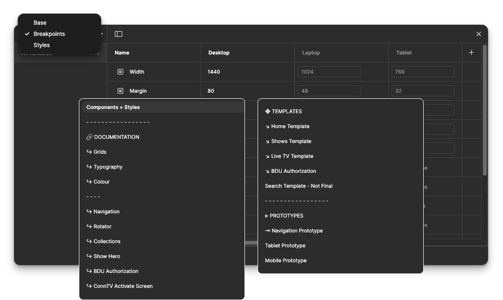
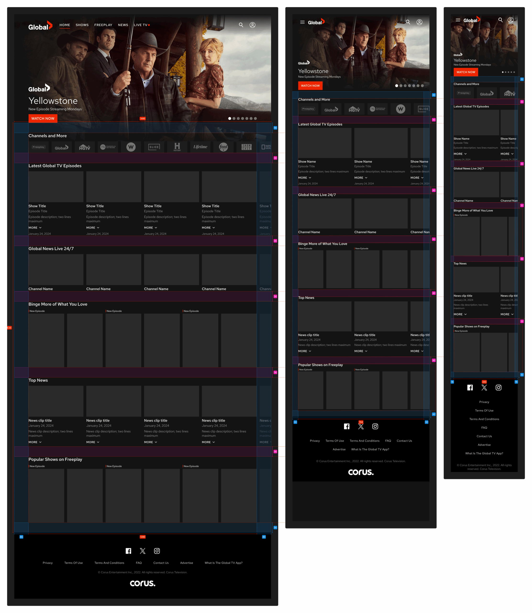
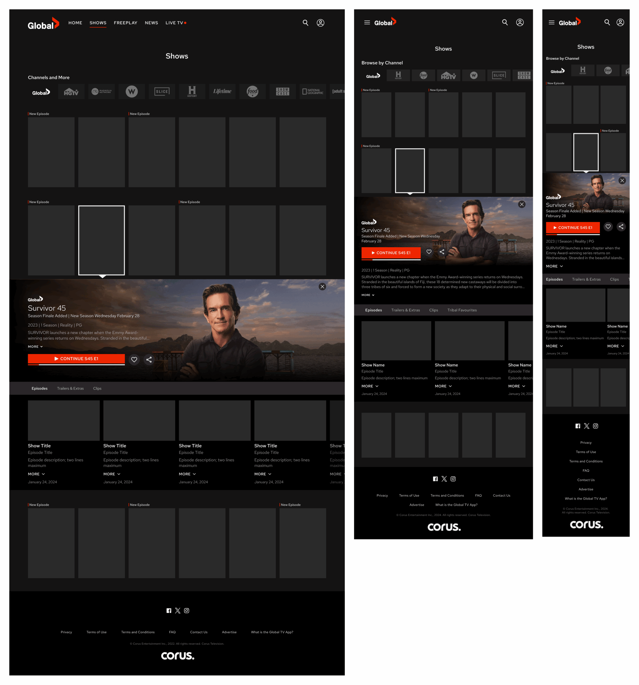
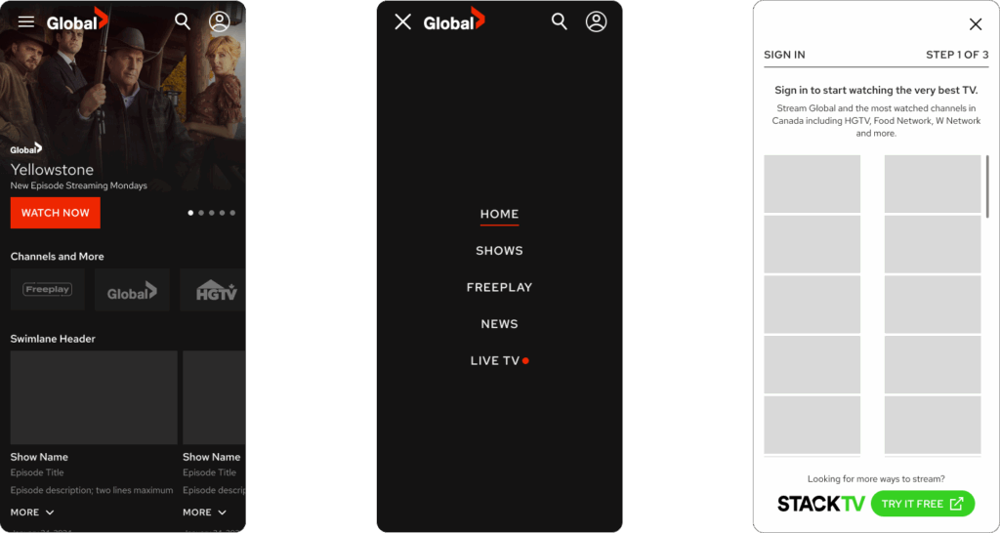
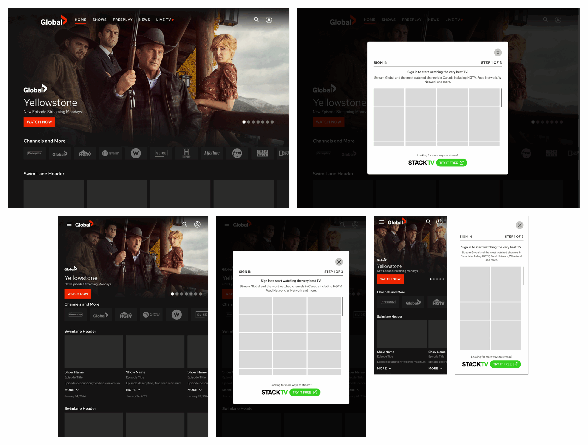

Overview
Global TV's streaming web platform had grown from a desktop-first codebase with no systematic approach to responsive design. The mobile app had a well-established design system — but translating that to browser contexts across multiple viewport widths required more than scaling components down.
I led the responsive web redesign: establishing a breakpoint system using Figma variables, adapting every core component and page template across Desktop (1440px), Laptop (1024px), Tablet (768px), and Mobile — then shipping developer-ready documentation covering grids, typography, components, and interaction patterns.
The web platform had no systematic breakpoint strategy. Components weren't designed to adapt — they were desktop-sized, degrading at smaller widths. Mobile web users encountered a scaled-down desktop experience, not a purpose-built one.
Breakpoint variables in Figma → component-by-component responsive adaptation → full page templates at every breakpoint → annotated dev-ready documentation covering grids, typography, navigation, and key interaction flows.
The Problem
The Global TV web platform had been built and extended over time without a unified breakpoint strategy. On desktop it looked polished — but on a laptop, tablet, or phone, users encountered layouts that either overflowed, scaled disproportionately, or simply didn't adapt at all.
"How might we give web users the same quality of streaming experience as the native app — regardless of the device they're watching on?"
The gap wasn't just visual. Without responsive layouts, key interactions — navigation, content discovery, sign-in flows — required disproportionate effort on smaller screens. The mobile app had done the hard work of defining the right patterns for small viewports; the web platform needed to learn from that, not ignore it.
No breakpoint system — components designed only at desktop width
Navigation, rotators, and swimlanes degraded at tablet and mobile widths
No developer documentation for responsive behaviour — each breakpoint was guesswork
Mobile app had strong patterns that weren't being referenced or adapted for web
System & Structure
Before touching any page design, I defined the breakpoint system using Figma Variables — encoding the grid spec for each viewport directly into the file. Desktop at 1440px with 80px margins, Laptop at 1024px with 48px, Tablet at 768px with 32px.
This meant every component and template was built against a shared, testable source of truth — not individual designer judgement. Switching breakpoints in Figma immediately reflowed anything tied to the variables.

The file was structured to serve both design and engineering — documentation pages for foundations, component pages for each pattern, and template pages covering every key screen. Prototypes were built separately for navigation, tablet, and mobile flows so developers could reference behaviour, not just layout.
Page Templates

The hero rotator collapses from a full-bleed widescreen layout to a vertically stacked card at mobile width. The channel swimlane reflows from a horizontal scroll row to a compact grid. Content collection swimlanes maintain their horizontal scroll behaviour at all breakpoints — reducing card size and gutter while preserving the browse-forward motion.

The channel filter strip compresses from a wide horizontal scroll to a compact, icon-first strip at smaller breakpoints. The show grid reduces from a five-column layout at desktop to a two-column grid at mobile. The inline Show Detail hero — when a title is selected — adapts its split layout into a stacked card, keeping the CTA above the fold at every width.
Interaction Details
Desktop navigation — a persistent horizontal bar with labelled items — doesn't translate to mobile. I designed a three-state mobile nav pattern: collapsed icon-bar, full-screen drawer on hamburger tap, and the sign-in modal flow. The drawer gives breathing room for the five primary navigation items without sacrificing screen real estate when it isn't needed.

Compact header with Global TV logo, search, profile icons, and hamburger. Full content area preserved below.
Full-screen nav overlay. Active item underlined in Global TV red. Close (×) replaces hamburger. Items: HOME · SHOWS · FREEPLAY · NEWS · LIVE TV.
3-step modal flow with progress indicator. Channel grid preview establishes what the user gains by signing in. STACKTV upsell positioned at foot.
BDU (Broadcast Distribution Undertaking) authentication — required for users signing in with a cable provider — was a complex multi-step flow that needed to work cleanly across desktop, tablet, and mobile. The modal-based flow adapts its layout at each breakpoint while keeping the step count and copy identical, so the authentication experience is consistent regardless of where a user is streaming from.

Engineering note: The BDU modal was one of the more complex flows to spec — the channel provider grid needed to scroll within the modal without the modal itself scrolling on the page. Each breakpoint had explicit max-height, scroll behaviour, and modal dismiss rules documented for the dev handoff.
Reflection
Using Figma Variables for breakpoints — rather than separate frames or duplicated components — changed how the whole design conversation worked. Switching a page from desktop to tablet was a variable toggle, not a rebuild. That speed made iteration feel cheap, which meant the team explored more layout directions before settling.
The bigger insight was about documentation scope. Shipping prototypes alongside static specs is the difference between a dev team that references your work and one that ignores it. Engineers could click through the navigation prototype and experience the drawer animation rather than reading a description of it — that made implementation discussions far more precise.
Introduce a formal component testing step using real content at each breakpoint before finalising specs — specifically for the channel swimlane and BDU grid, which are the most content-variable components. Catching overflow and truncation edge cases in Figma is faster than catching them in code review.